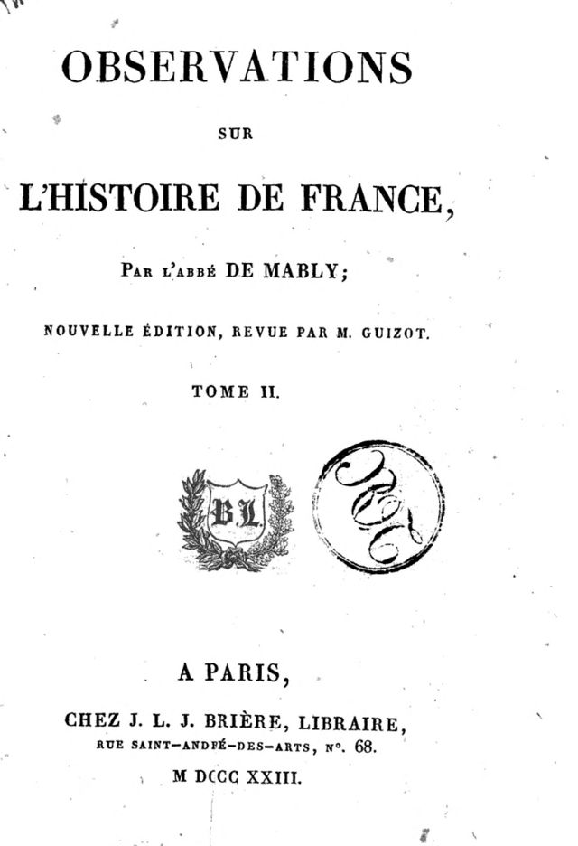
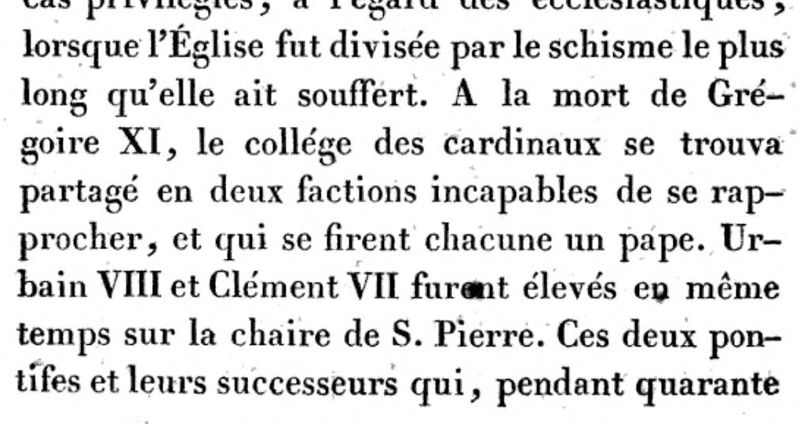
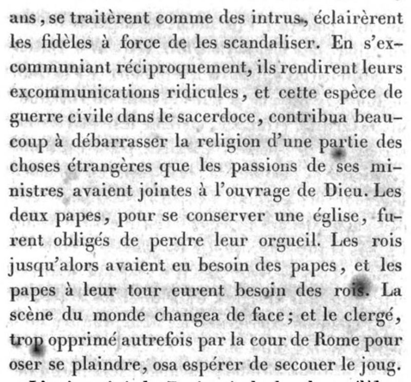

The Great Schism (book IV, ch. V, pp. 68–69)
French: 1823, tome II, pp. 68–69, scan n77–n78. Highlighted: the discredit Lecky refers to.


… when the Church was divided by the longest schism it has ever suffered. At the death of Gregory XI the college of cardinals found itself split into two factions that could not be reconciled, and each made itself a pope. Urban VIII [sic, for VI] and Clement VII were raised at the same time to the chair of St. Peter. These two pontiffs and their successors, who for forty years treated each other as intruders, enlightened the faithful by dint of scandalising them. By excommunicating each other they made their excommunications ridiculous, and this kind of civil war within the priesthood did much to rid religion of some of the foreign things that the passions of its ministers had added to the work of God. The two popes, to keep a church for themselves, had to lose their pride. Until then kings had needed popes; now popes in their turn needed kings. The scene of the world changed; and the clergy, once too oppressed by the court of Rome to dare complain, dared to hope to shake off the yoke.
The University of Paris, the most famous school in Europe, was beginning to know the antiquity of the Church and to bring some criticism to its studies. Tired, besides, of paying the perpetual tenths demanded by a doubtful pope, it asked for the reason of the taxes he imposed, and, seeing nothing but doubt and obscurity in the claims of the court of Rome, it was the first to raise the standard of revolt. This dawning light spread over all Christendom. Men opened their eyes because they were avaricious; and once they were open, and men had grown used to the boldness of seeing, thinking, reasoning and judging for themselves, they saw a mass of prejudices, abuses and disorders …
Translation: this edition’s draft. The last lines (p. 70) are from the OCR only.
Original French
… lorsque l’Église fut divisée par le schisme le plus long qu’elle ait souffert. A la mort de Grégoire XI, le collége des cardinaux se trouva partagé en deux factions incapables de se rapprocher, et qui se firent chacune un pape. Urbain VIII et Clément VII furent élevés en même temps sur la chaire de S. Pierre. Ces deux pontifes et leurs successeurs qui, pendant quarante [p. 69] ans, se traitèrent comme des intrus, éclairèrent les fidèles à force de les scandaliser. En s’excommuniant réciproquement, ils rendirent leurs excommunications ridicules, et cette espèce de guerre civile dans le sacerdoce, contribua beaucoup à débarrasser la religion d’une partie des choses étrangères que les passions de ses ministres avaient jointes à l’ouvrage de Dieu. Les deux papes, pour se conserver une église, furent obligés de perdre leur orgueil. Les rois jusqu’alors avaient eu besoin des papes, et les papes à leur tour eurent besoin des rois. La scène du monde changea de face; et le clergé, trop opprimé autrefois par la cour de Rome pour oser se plaindre, osa espérer de secouer le joug.
L’université de Paris, école la plus célèbre de l’Europe, commençait à connaître l’antiquité ecclésiastique, et à mettre quelque critique dans ses études. Lassée d’ailleurs de contribuer aux décimes perpétuelles qu’exigeait un pape équivoque, elle se demanda raison des impôts qu’il ordonnait, et ne voyant que des doutes et de l’obscurité dans les prétentions de la cour de Rome, elle leva la première l’étendard de la révolte. Cette lumière naissante se répandit sur toute la chrétienté. On ouvrit les yeux, parce qu’on était avare; et dès qu’ils furent ouverts, et qu’on se fut familiarisé avec la témérité de [p. 70] voir, de penser, de raisonner et de juger par soi-même, on vit une foule de préjugés, d’abus et de désordres …
Lecky (vol. II, ch. V, text at note 3) puts the schism beside “the rapid growth of the industrial classes” and “the revival of a spirit of bold and unshackled enquiry” as causes that broke the Church’s terrors. Mably’s chapter makes the same link: the schism taught men “the boldness of seeing, thinking, reasoning and judging for themselves”.
Further down the rabbit hole
Sources that Lecky cites in the notes next to the ones that cite this page.
- Ducellier, Histoire des classes laborieuses en FranceThe Truce of God: from the Church’s peace to the king’s
- Sarpi, Historia dell’origine, forma, leggi ed uso dell’ufficio dell’InquisizioneA Venetian friar on how churchmen changed their tune about princes
- Michelet, Louis XIV et la révocation de l’Édit de NantesJurieu stands alone against Bossuet; the gentle Saurin works for Louis XIV
- Allen, Inquiry into the Rise and Growth of the Royal PrerogativeAn oath of non-resistance that outlived the Revolution by some thirty years
- An Homily against Disobedience and Wilful RebellionHell as the prison of rebels: the Church of England preaches obedience
- Aquinas, Summa theologiae, II-IIHeretics and forgers; the usurper’s subjects


Backlinks
Every place in Rationalism in Europe that links to this page (generated automatically when the site is built).
- Chapter V: note 3